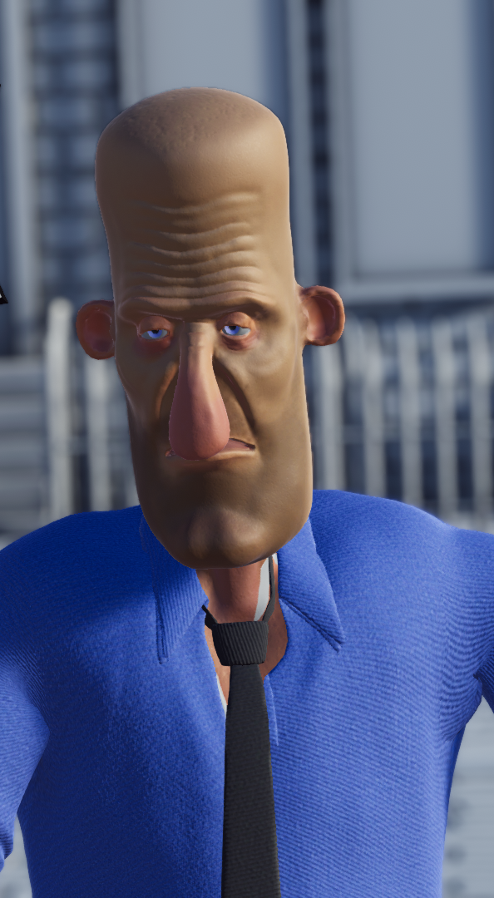

D.R.U.N.K
Made with Unity.
D.R.U.N.K was made within two weeks. It's a ragdoll obstacle avoiding game, where the character gains momentum like a rolling ball and the gameplay comes from controlling the drunken character to avoid obstacles
If the player comes in contact with any obstacles the ragdoll activates.
The game has one long level that the player must clear. Checkpoints were added in a later version.
This game was co-created with artist Hermanni Penttala.
Key features
- 3D ragdoll system
- Efficient level reload system
- Player vomit particle system™
Gameplay video [LINK]
itch.io page [LINK]